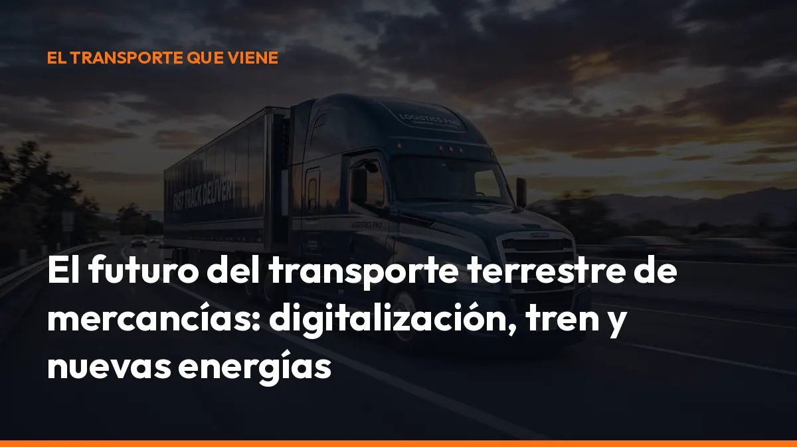

El futuro del transporte terrestre de mercancías: digitalización, tren y nuevas energías

La carretera seguirá siendo imprescindible. Sin embargo, será una carretera más digital, más controlada y con vehículos progresivamente menos contaminantes.
Si eres transportista autónomo o gestionas una flota, tendrás que controlar cuatro áreas:
- Documentación digital.
- Tacógrafo y cumplimiento normativo.
- Ferrocarril e intermodalidad.
- Electrificación y combustibles alternativos.
La adaptación no tiene por qué ser complicada. Empieza por digitalizar tus documentos, ordenar tus procesos y conocer los cambios que afectan directamente a tu ruta.
NUEVA NORMATIVA: EL PAPEL DEJA PASO AL DOCUMENTO
DIGITAL
El cambio más inmediato llegará el 5 de octubre de 2026.
La Ley 9/2025, de Movilidad Sostenible, establece que el Documento de Control Administrativo deberá ser necesariamente digital diez meses después de la entrada en vigor de la norma.
En la práctica, el DeCA electrónico deberá estar disponible antes de iniciar el servicio y podrá consultarse mediante una URL segura o código QR.
¿Qué significa para ti?
- Menos papel: deja de imprimir, archivar y transportar documentos físicos.
- Disponibilidad inmediata: muestra el documento desde el móvil durante un control.
- Trazabilidad: conserva la fecha de creación, las modificaciones y las firmas.
- Menos errores: evita documentos incompletos, ilegibles o desactualizados.
- Cumplimiento digital: prepara tu empresa para un entorno de transport compliance permanente.
El transporte internacional también avanza hacia los digital transport documents. El e-CMR permite sustituir progresivamente la carta de porte internacional en papel por un documento electrónico con trazabilidad, firmas digitales y acceso compartido entre cargador, transportista y destinatario.
En 2026, el e-CMR gana presencia y se integra con más sistemas de gestión. Conviene aclarar un punto: el uso del e-CMR no implica que toda operación internacional deba abandonar ya el papel por una obligación general de la Unión Europea. Su utilización depende de la ruta, los países implicados y la normativa aplicable.
Aun así, la dirección es clara: menos documentos físicos y más información conectada.
Pásate al DeCA digital antes del 5 de octubre
Con Mi Carga puedes generar documentos de control y cartas de porte desde el móvil, descargarlos en PDF y consultarlos cuando los necesites.
EL FERROCARRIL CRECERÁ, PERO LA CARRETERA SEGUIRÁ
SIENDO CLAVE
Europa quiere trasladar más mercancías desde la carretera hacia el tren y otros modos de transporte. En los debates del sector aparece con frecuencia el objetivo del 30%, pero conviene interpretarlo correctamente.
No existe una obligación general que imponga que el ferrocarril alcance el 30% de todas las mercancías en 2030. Esa cifra funciona como referencia estratégica y objetivo de cambio modal, especialmente para los trayectos largos.
La Comisión Europea plantea aumentar el tráfico ferroviario de mercancías un 50% en 2030 respecto a 2015 y duplicarlo en 2050.
España parte de una cuota ferroviaria reducida. La propia Ley 9/2025 señala una cuota aproximada del 4% de las toneladas-kilómetro y prevé medidas para impulsar el transporte ferroviario de mercancías.
El objetivo nacional más citado para 2030 es alcanzar alrededor del 10%.
¿Cómo se impulsará el tren?
- Autopistas ferroviarias: los camiones o semirremolques podrán realizar parte del recorrido sobre tren.
- Bonificaciones de cánones: se prevén incentivos sobre los costes de uso de la infraestructura ferroviaria durante un periodo mínimo de cinco años.
- Nodos logísticos: crecerán las terminales donde se conectan carretera, tren, puertos y almacenes.
- Corredores estratégicos: aumentará la importancia de los ejes Mediterráneo, Atlántico y las conexiones con puertos.
- Intermodalidad: una misma mercancía combinará varios modos con mayor coordinación digital.
La carretera no desaparece. Cambiará su función. El tren será más competitivo en trayectos largos y grandes volúmenes. El camión seguirá siendo fundamental para la recogida, distribución regional, última milla y conexión con el cliente final.
Para ti, esto puede significar trabajar más veces como parte de una cadena multimodal. La documentación, los horarios y las entregas deberán estar perfectamente coordinados.
MÁS INFRAESTRUCTURAS, PERO TAMBIÉN MÁS CONTROL DE
LOS COSTES
El futuro del transporte terrestre no depende solo de comprar nuevos camiones. También exige mejorar las infraestructuras existentes.
La planificación pública se orienta hacia:
- Conservación de carreteras: más mantenimiento y adaptación de la red.
- Áreas de descanso seguras: especialmente necesarias para cumplir los tiempos de conducción y descanso.
- Nodos logísticos: puntos de intercambio entre carretera, tren y otros modos.
- Puntos de recarga: instalaciones adaptadas a camiones eléctricos.
- Información en tiempo real: datos sobre tráfico, aparcamientos, recargas y restricciones.
- Evaluación de inversiones: las nuevas infraestructuras deberán justificar mejor su rentabilidad económica, social y ambiental.
También aumentará la presión sobre los costes de la carretera. Las zonas de bajas emisiones, los posibles sistemas de tarificación por uso, el precio de la energía, los peajes y las exigencias medioambientales afectarán a la planificación de cada operación.
Por eso tendrás que conocer el coste real de cada ruta. No bastará con calcular el combustible. También deberás valorar:
- Tiempo de conducción.
- Peajes y restricciones.
- Consumo energético.
- Acceso a zonas urbanas.
- Tiempo de carga o repostaje.
- Coste de espera.
- Documentación y cumplimiento.
La empresa que controle mejor estos datos podrá ajustar sus precios y evitar pérdidas.
VEHÍCULOS ELÉCTRICOS Y COMBUSTIBLES ALTERNATIVOS
La electrificación avanzará primero en el reparto urbano y regional. En estos servicios, las distancias son más previsibles y los vehículos pueden recargarse durante la noche o en las bases logísticas.
En el transporte pesado de larga distancia, la transición será más progresiva. Se combinarán varias soluciones:
- Camiones eléctricos de batería: especialmente adecuados para distribución urbana y regional.
- Biometano y combustibles renovables: útiles para reducir emisiones sin sustituir de inmediato toda la flota.
- Hidrógeno: con potencial para rutas largas, aunque todavía depende del coste y de la red de suministro.
- Combustibles sintéticos y avanzados: destinados a operaciones donde la electrificación sea más compleja.
El Reglamento europeo AFIR obliga a los Estados miembros a desplegar infraestructura de recarga y repostaje alternativa.
En la red transeuropea TEN-T se instalarán progresivamente puntos de recarga específicos para vehículos pesados y estaciones de hidrógeno. El objetivo es que puedas realizar rutas internacionales con menos dependencia del gasóleo convencional.
¿Qué debes hacer ahora?
No cambies toda tu flota sin analizar tus rutas. Empieza por estudiar:
- Kilómetros diarios.
- Carga habitual.
- Pendientes y tipo de carretera.
- Tiempo disponible para recargar.
- Ubicación de tu base.
- Coste total por kilómetro.
- Ayudas públicas disponibles.
La tecnología debe adaptarse a tu operación. No al revés.
EL TACÓGRAFO LLEGARÁ A MÁS VEHÍCULOS
A partir del 1 de julio de 2026, los vehículos comerciales ligeros de más de 2,5 toneladas y hasta 3,5 toneladas utilizados en transporte internacional o cabotaje por cuenta ajena deberán incorporar un tacógrafo inteligente de segunda generación.
La obligación afecta a vehículos matriculados en la Unión Europea que realicen transporte internacional de mercancías o cabotaje con remuneración.
Esto incluye muchas furgonetas y vehículos ligeros que hasta ahora trabajaban con un nivel de control diferente.
El impacto práctico será inmediato
- Más registros: conducción, descansos, fronteras y actividad.
- Más inspecciones: los datos podrán revisarse en carretera.
- Más planificación: deberás organizar los descansos antes de iniciar la ruta.
- Más integración: el tacógrafo tendrá que conectarse con la gestión de flota.
- Más responsabilidad: una mala planificación puede provocar retrasos o sanciones.
Consulta siempre las excepciones y el ámbito exacto de aplicación antes de operar. La Comisión Europea explica el calendario del tacógrafo inteligente.
¿CÓMO AFECTA EL FUTURO DEL TRANSPORTE AL
AUTÓNOMO?
Para el transportista autónomo, el futuro no significa únicamente comprar un camión nuevo. Significa trabajar con más información y menos margen para improvisar.
Tendrás que controlar cinco puntos:
1. Documentación: genera el DeCA y la carta de porte correctamente antes de salir. 2. Costes: calcula el precio real de cada viaje y cada kilómetro. 3. Tecnología: utiliza aplicaciones sencillas que funcionen desde la cabina. 4. Formación: mantente actualizado en tacógrafo, ADR, estiba y normativa europea. 5. Energía: decide cuándo y cómo incorporar vehículos de bajas emisiones. La ventaja es que muchas tareas que hoy consumen tiempo pueden automatizarse. Puedes emitir un documento desde el móvil, conservarlo en la nube, compartirlo con la oficina y mostrarlo en un control en segundos.
PREPÁRATE HOY PARA EL TRANSPORTE DE MAÑANA
El futuro del transporte terrestre de mercancías será:
- Digital, porque el DeCA electrónico será obligatorio desde el 5 de octubre de 2026.
- Intermodal, porque carretera y ferrocarril deberán trabajar juntos.
- Controlado, porque el tacógrafo llegará a más vehículos.
- Sostenible, porque crecerán la electrificación y los combustibles alternativos.
- Trazable, porque cada operación dejará más datos.
- Competitivo, porque tendrás que controlar mejor tus costes.
No esperes al próximo control ni a que cambie tu cliente para adaptarte.
Con Mi Carga, puedes generar tus documentos de transporte desde el móvil, guardar tus PDF en la nube y empezar con 10 transportes gratuitos.
La suscripción cuesta:
10 €/mes + IVA
o
90 €/año + IVA
Documentos ilimitados. Sin créditos por porte. Sin costes ocultos.
Fuentes y normativa consultada
- Ley 9/2025, de Movilidad Sostenible — BOE
- Resolución de 5 de junio de 2026 sobre los requisitos técnicos del documento electrónico de control — BOE
- Reglamento europeo AFIR sobre infraestructura de combustibles alternativos
- Reglamento eFTI sobre información electrónica del transporte de mercancías
- Información de la Comisión Europea sobre el tacógrafo inteligente
Crea tu cuenta y prueba 10 transportes gratis, sin tarjeta y sin compromisos.
DeCA, carta de porte y ADR, en PDF, con QR y archivo automático en la nube.
Empezar con 10 documentos gratisArtículo informativo. Consulta siempre el caso concreto de tu operación. ¿Dudas? Escríbenos.